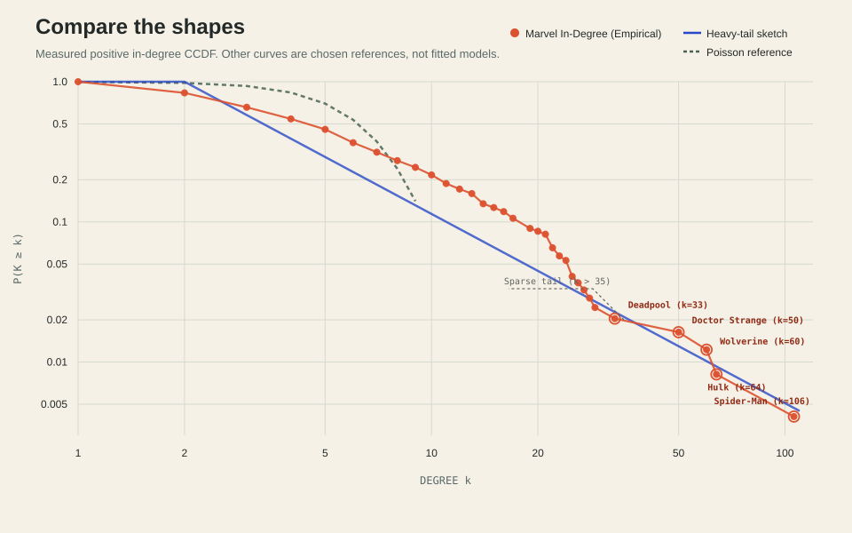

01 / MODELS & EVIDENCE
A striking pattern.
But compared to what?
Spider-Man receives 106 links. Most pages receive far fewer. A model helps us ask which mechanisms could produce such an uneven distribution.
An Erdős–Rényi model places edges at random. Preferential attachment gives well-connected nodes a greater chance of attracting the next link. They are useful comparisons, but a curve that looks similar does not identify the process that created Wikipedia.
The orange curve below is measured from the frozen roster, among pages with at least one incoming link. The comparison curves are illustrative mathematical shapes. Their agreement with the data is not a fitted model or a significance test.


Why a straight line does not establish a power law
Cumulative points reuse observations, so they are not independent. A least-squares line on log–log axes is not enough to establish a power law. A defensible claim requires a fitted range, goodness-of-fit assessment, and comparison with alternative distributions.
The guide line in this exhibit has a chosen slope. This repository does not provide a likelihood-ratio test or a fitted power-law uncertainty estimate, so we report neither a significance value nor a scale-free verdict.